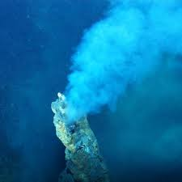

Los extremofilos son organismos capaces de sobrevivir y reproducirse en condiciones ambientales extremas que resultarian letales para la mayoria de las formas de vida. Su estudio es clave para delimitar la zona de habitabilidad planetaria.
Viven a temperaturas superiores a 60 grados Celsius, como en fuentes hidrotermales o fumarolas oceanicas.
Prosperan en ambientes frios, como regiones polares o lunas heladas.
Habitan ambientes con alta concentracion salina.
Toleran condiciones de pH extremo.
La existencia de extremofilos amplía el rango de condiciones consideradas habitables, reforzando la posibilidad de vida microbiana en Marte, Europa o Encélado.
